How Agent-Driven Creative Trace Mining Reshapes Design Behavior in a Deployment Study of Intent-Aligned Multimodal Design
TL;DR
Designers capture inspirations constantly — sketches, photographs, voice memos, notes — but these creative traces rarely flow back into creation. DesignJournal consolidates multimodal artifacts into one workspace and mines them with an agentic pipeline: structured grouping by three role-differentiated agents (ECHO, INSIGHT, SPARK), belief-guided prompt refinement, and iterative intent updates. To measure what this does to real practice, we ran a 10-day in-the-wild deployment with eight professional designers and built a framework that classifies 5,838 design actions into a dual-origin taxonomy. Agent support significantly reduced spatial repositioning — concentrated in small moves — and shifted transition structures from long repositioning chains toward relational encoding sequences.
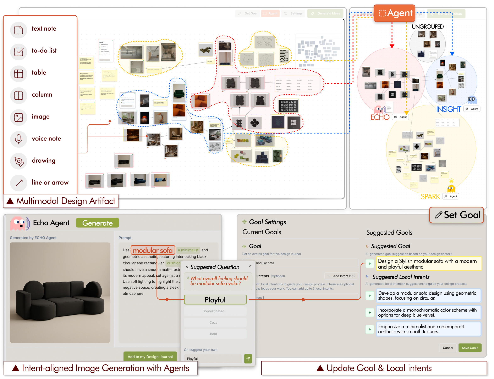
classified design actions from 14,075 raw events
in-the-wild deployment, 5 days per condition
professional designers, within-subject
Relocate actions with agent support (p = .039)
The problem
Designers work across seven to eight parallel tools. Ideas scatter across apps, boards, and folders, and a findability bottleneck recurs every time reuse is attempted. Four obstacles motivate four design goals.
Traces scatter across parallel tools and become a findability bottleneck during goal-directed reuse. A single repository must keep multimodal traces revisitable both chronologically and spatially.
Pinboards either keep connections off-canvas or lack model-driven interpretation, so relational context erodes as the collection grows. Relationships between items must be explicit and persistent at scale.
A single text prompt rarely conveys implicit intent; text-centric input narrows interpretive range and induces fixation. Generation should be grounded in accumulated, time- and relation-structured records — not isolated prompts.
Existing multiturn T2I offers no group-level reuse, and generative output carries documented fixation risk. Support needs distinct roles for consolidation, reinterpretation, and divergence — each keeping intent aligned across iterations.
Which changes in design action patterns emerge when agent-based affordances are introduced?
Which new human–AI collaborative loops arise, and how do they replace or complement existing practices?
How do designers perceive appropriate agent-mediated workflows in terms of authorship, traceability, and agency?
The system
Records enter as notes, images, drawings, tables, to-do lists, or voice memos. They are stored as structured JSON, arranged on a canvas with a chronological timeline alongside, and composed into prompts by the agents.
A Global Goal plus up to three Local Intents, alongside unified multimodal capture — notes, images, audio, sketches — each annotated with Captions, Reactions, and Comments stating why it was saved.
The left timeline tracks items chronologically; the central canvas lets designers place, link, and cluster records at the group level so relations persist as the collection grows.
Three agents infer implicit intent by computing similarities over extracted descriptions, then generate and refine targeted questions. Each item carries a high/low belief signal.
Group-level prompts produce alternatives that the designer compares, selects, and saves back as new inspiration — with the Goal and Local Intents refined after each feedback loop.
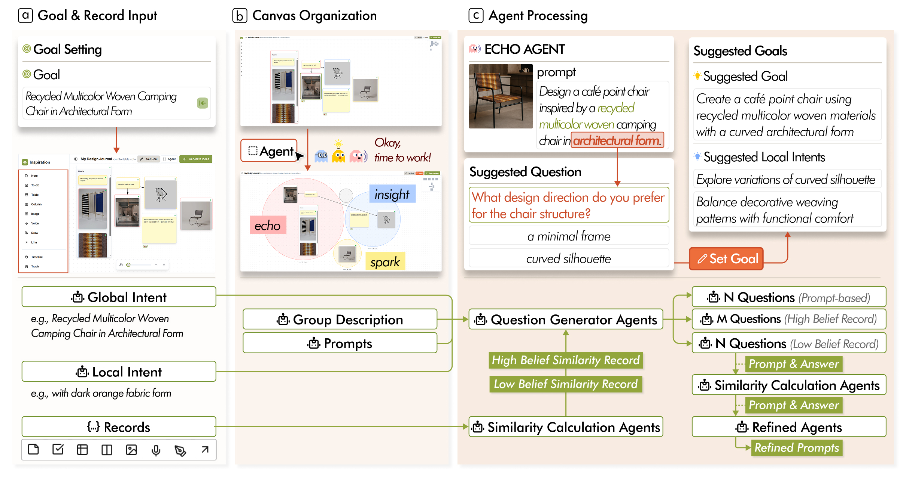
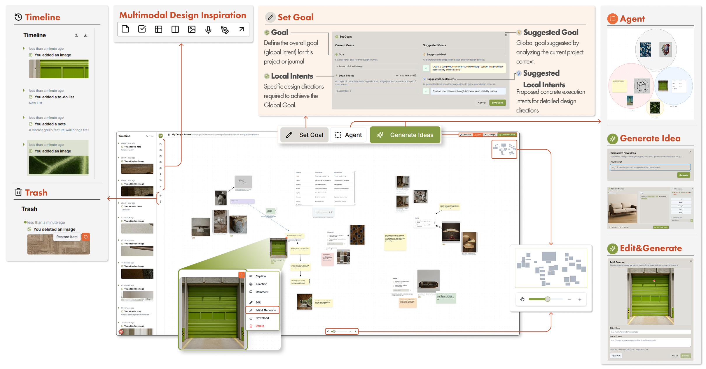
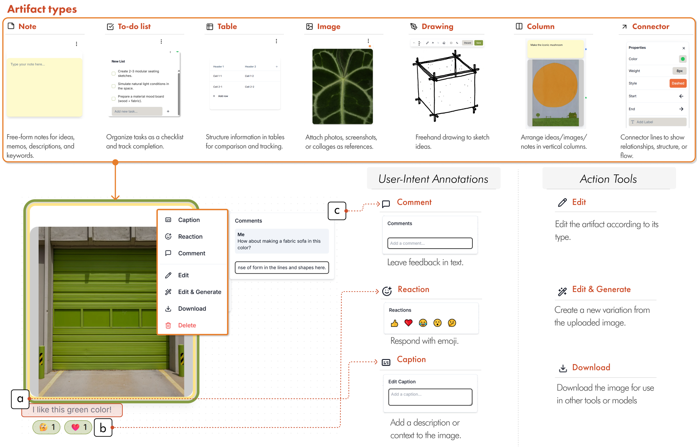
Three agents
The same record can land in a different group depending on the current Goal and Local Intent — the assignment is relational, not categorical. Each agent synthesizes its own prompt from its group, so the designer works with three parallel alternatives from three distinct perspectives.
Records it pulls in
Synthesized prompt → refinement question
Illustrative example from the cafe lounge brief. Prompts are strictly grounded in the collected descriptions — exaggeration is prohibited — and questions target only visually verifiable attributes (color, material, form, layout, composition, style).
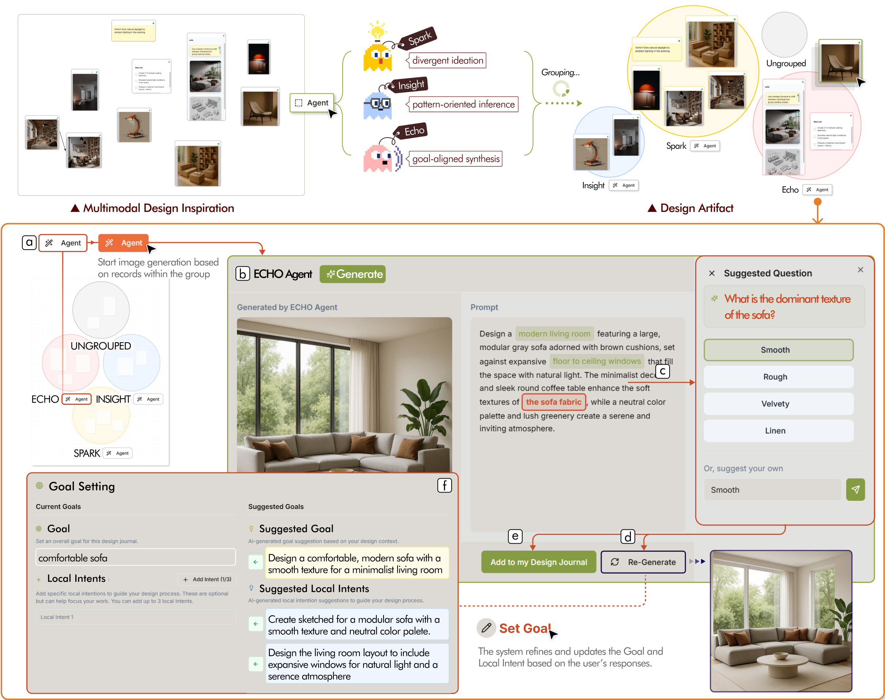
Multiturn back-and-forth burdens cognition, so the refinement agent uses a batch-questioning scheme: it proposes questions about multiple attributes across one or more entities at once, collects a single response, and updates the prompt — preserving the benefit of multiturn interaction without the latency.
Artifacts are split by belief. High-belief artifacts drive questions that encourage diversity around well-captured elements; low-belief artifacts target ambiguities to resolve underspecified parts of the prompt. The agent then applies the response while minimizing edits — preserving core context and tone, updating only the changed attributes.
Prevalidation · IDEA-Bench T2I
With the Prompt Refinement Agent, generation reaches the IDEA-Bench T2I state of the art (Flux-1, 83.33) under MLLM-based automated evaluation.
Analysis framework
To ask whether agents merely add actions or reconfigure sequences, we needed a classification that separates designer-initiated manipulation from system-mediated generation. 14,075 raw events → 7,293 clean events → 5,838 mappable actions.
Designer-initiated actions on seven artifact types, classified by comparing each instance’s current state St against St−1 across seven deltas — life cycle, Δchar, Δpos, attributes, annotations, relation endpoints, and hierarchy.
AI-mediated actions detected from system-level markers, capturing four distinct AI roles across the generation and intent-alignment loop.
Hover any category for its definition.
Wilcoxon signed-rank tests on paired raw counts per category, for volume shifts between conditions.
Patterns at n = 2–5 per participant, with concurrent action pairs expanded into all 2k permutations and equally weighted.
First-order Markov transition matrices per condition, compared by Jensen–Shannon divergence with a 5,000-iteration permutation test.
Recurring sequences of alternating designer-initiated and agent-mediated actions, characterized for RQ2.
Deployment
Laboratory tasks can measure short-term performance, but they cannot reveal whether records accumulate into reusable creative traces, whether intent alignment holds over time, or whether designers actually change how they revisit and recombine past artifacts.
The unified multimodal workspace with manual organization — timeline, canvas, relational linking, and direct prompt-based generation.
The same workspace plus the agentic pipeline: automatic ECHO/INSIGHT/SPARK grouping, belief-guided prompt refinement, and iterative intent updates.
Eight professional designers (1–8 years’ experience, 30–60 h/week) from design agencies and in-house corporate teams — industrial, product, furniture, and home furnishings design. Within-subject, so each serves as their own baseline. IRB-approved (HYU-2025-138).
Two standardized client-style briefs — a specialty cafe lounge (space) and a kitchenware collection (product) — one per condition, counterbalanced. Deliver a final outcome plus a moodboard with written rationale suitable for client communication.
Five working days per condition, each followed by a post-condition survey and semi-structured interview. Designers kept their familiar tools (CAD, Adobe, whiteboards) but funneled every inspiration through the study tool for traceability, with lightweight daily documentation.
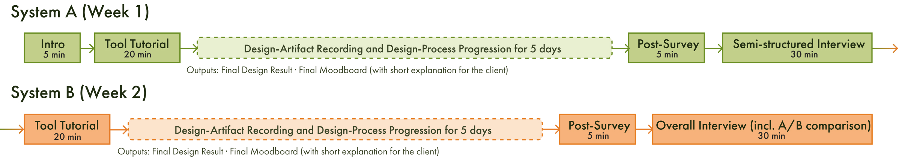
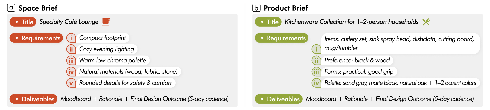
Results · RQ1
Total action volume did not differ significantly between conditions (W = 6, p = .109). What changed was which actions and, more tellingly, in what order.
Relocate fell from M = 197.5 to M = 112.1.
W = 3, p = .039, r = 0.83 — a large effect, with six of eight designers decreasing. No other shared category changed significantly.
The drop concentrated in small displacements.
Small: 75.5 → 27.6 (p = .047, d = 0.81), significant in 100% of 1,000 Monte Carlo threshold perturbations. Medium and large did not reach significance.
Transition structure differed significantly.
Group-level permutation test: observed M = 0.289 vs. null M = 0.248, Z = 2.24, p = .010. Individual-level corrected JSD: p = .031, r = +1.00.
Relocate stratified into three magnitude levels at the 33rd and 67th percentiles of the pooled displacement distribution.
| Magnitude | baseline M (SD) | +Agent M (SD) | p | d | MC robustness |
|---|---|---|---|---|---|
| Small | 75.5 (58.3) | 27.6 (15.3) | .047* | 0.81 | 100% (±15 pct.) |
| Medium | 64.4 (51.6) | 39.0 (22.0) | .109 | 0.54 | 4.9% |
| Large | 57.6 (36.2) | 45.5 (23.7) | .461 | 0.37 | 0.0% |
Wilcoxon signed-rank tests. MC robustness = proportion of Monte Carlo perturbation runs preserving significance under threshold variation. The same stratification applied to Elaborate yielded no significant differences at any magnitude.
Interviews explained the mechanism. P6: in the baseline, “I had to manually move images here and there, but the agent grouped them automatically.” P4 described the baseline as requiring “planning even the grouping part from scratch on a blank slate,” while agent-mediated grouping “took care of more than half of that organizational work.” P1: “grouping through ECHO saved time, especially when making final decisions and organizing.”
Pure Relocate chains dominate the baseline at every order. With agent support they shrink at each one — and the gap widens the longer the chain.
Relocate → Relocate
In the baseline, Relocate → Relocate dominated all 2-grams and stayed high through higher orders. Under agent support every order dropped. The baseline top-10 also contained Relocate → Elaborate (1.84%) and Elaborate → Relocate (1.76%) — workflows where spatial arrangement preceded content elaboration. Both were reduced.
Relate counts did not differ (p = .688), but their position did. Create → Relate entered the +Agent top-10 at 2.98%; Relate → Relate rose to 6.38% and Relate → Relocate to 5.82%. At higher orders, pure Relate chains did not grow — instead interleaved Relate–Relocate 3-grams displaced Relocate-dominated ones. Relational work became interwoven with spatial activity rather than occurring in isolated bursts.
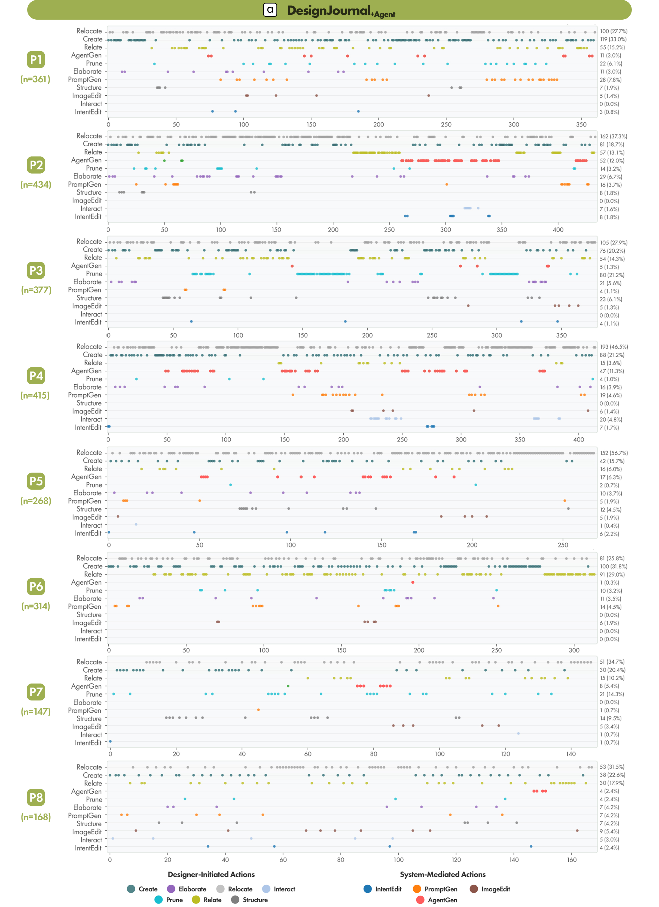
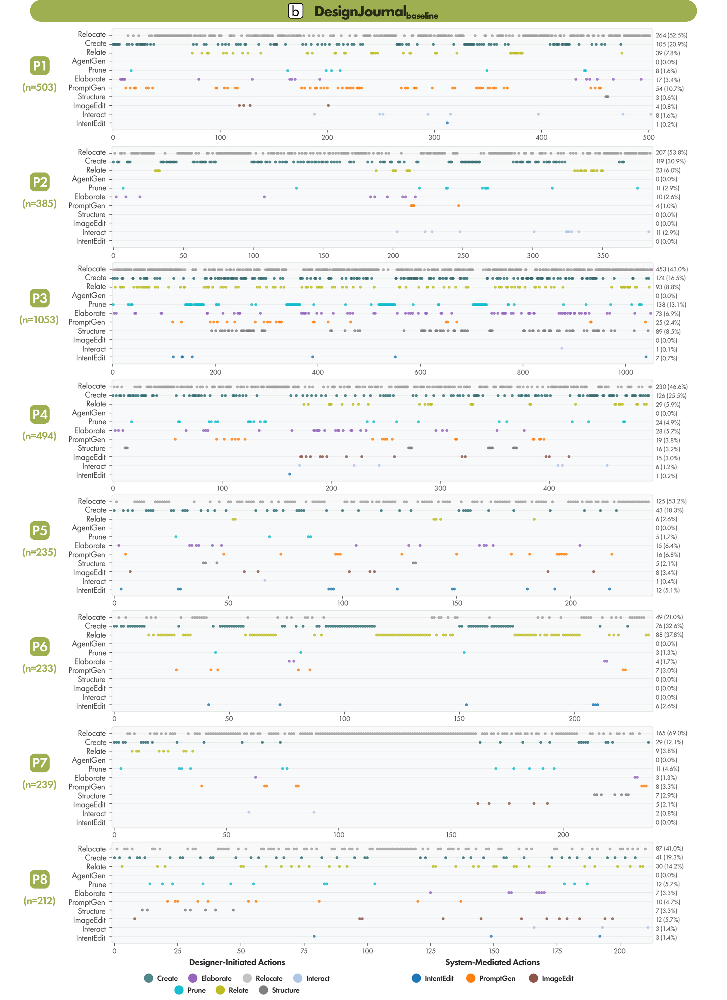
Results · RQ2
AgentGen actions were infrequent (5.84% of all actions), yet they recurred at the core of the generation–refinement loops. Their influence is structural, not volumetric.
Baseline workflows began with the designer’s own manual initiation — keyword derivation, moodboard assembly, or sketching. With agent support the loop started earlier, from the collected material itself, replacing those manual routines.
“I started from references rather than sketches from the beginning because the agent could work with collected materials.”
Without the agent, “I had to derive keywords and start categorizing by myself from scratch.”
“Even when I didn’t have a concrete image in mind, I could use the Generate Idea function right away.”
Visible in the transition data: AgentGen → AgentGen entered the +Agent top-10 2-grams at 2.30%. Among the participants who used it, this reflected sequential generation (M = 34.10%, SD = 22.33%) — producing multiple alternatives before selecting.
In P2’s progression, the agent first acted as a divergent catalyst, generating kitchenware alternatives through sequential SPARK triggers.
Iterative cycling through intent articulation, agent generation, and image editing until a cohesive design settles. P2 refined and committed selected outputs over five days, mobilizing INSIGHT and a final round of SPARK.
P1 used ECHO and INSIGHT for direction validation, progressively developing standing tables, evening mood lighting, rounded furniture, and cocoon seating — converging on a cozy cafe with natural materials and terracotta floor accents.
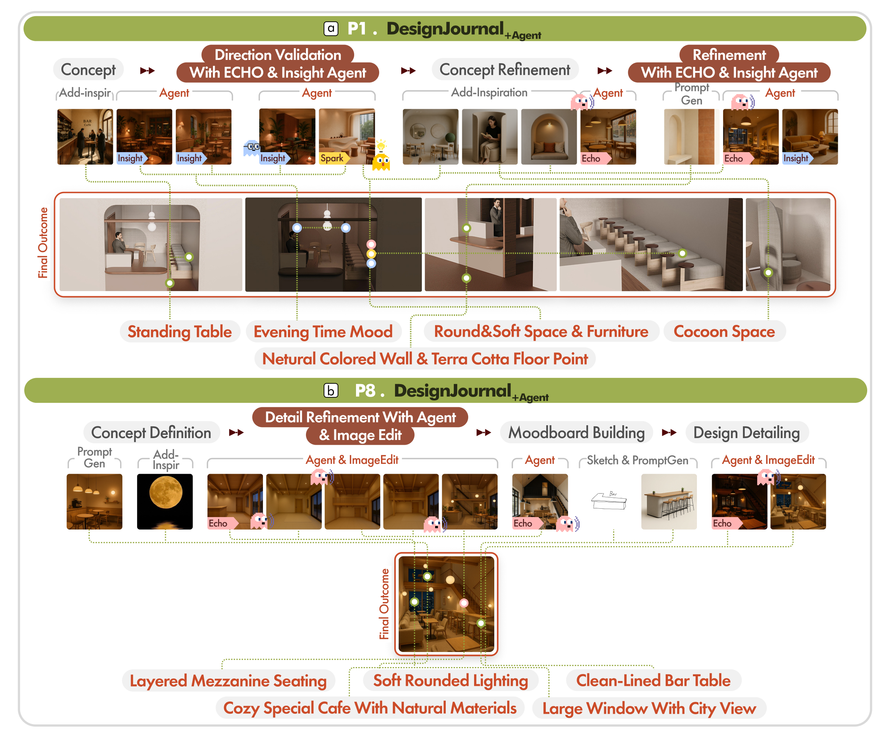
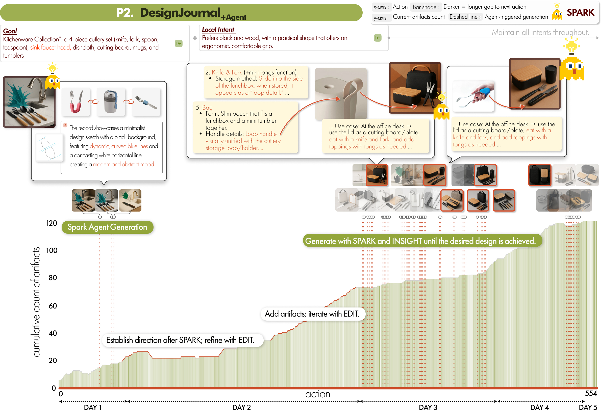
Results · RQ3
Knowing an agent would read the journal changed what designers were willing to put in it — an upstream effect on capture, not just on generation.
In the baseline, “I didn’t have to worry about the agent, so I had more freedom in uploading records.” With the agent, “I felt constrained because I was thinking about what the agent would see.”
“If I could distinguish which elements the agent is looking at, I would have used it better — some memos I wouldn’t want it to read, others I would.”
The takeaway isn’t that agents make designers faster — total action volume barely moved. It’s that agents redistribute design effort. Small-scale spatial fiddling, the manual proxy for organizing thought, gets absorbed by automatic grouping; what remains reorganizes around relational encoding and generation–refinement exchange. Agent support also extended designers’ creative reach beyond independent exploration — while raising open questions about authorship, traceability, and how much of the journal a designer actually wants read.
Deployment architecture
DesignJournal captures and processes all designer activity through a serverless cloud stack — the source of the 14,075 raw interaction events behind the analysis.
BibTeX
@article{lee2026designjournal,
title = {How Agent-Driven Creative Trace Mining Reshapes Design Behavior
in a Deployment Study of Intent-Aligned Multimodal Design},
author = {Lee, Seung Won and Choi, Jiin and Yun, Yejin and Jin, Semin
and Jang, Yugyeong and Hwang, Geunmin and Park, Sang Woon
and Ban, Seonghoon and Hyun, Kyung Hoon},
journal = {International Journal of Human--Computer Interaction},
year = {2026},
note = {Under review},
}Under review at IJHCI. Volume, pages, and DOI will be filled in once the paper is accepted and the official citation is released.